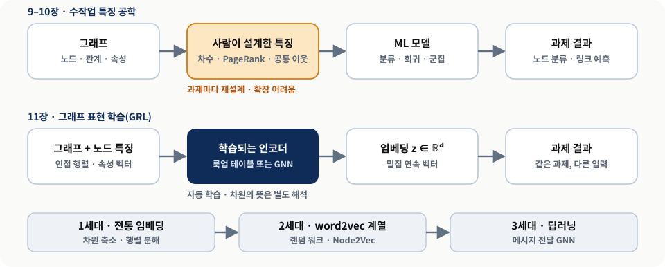
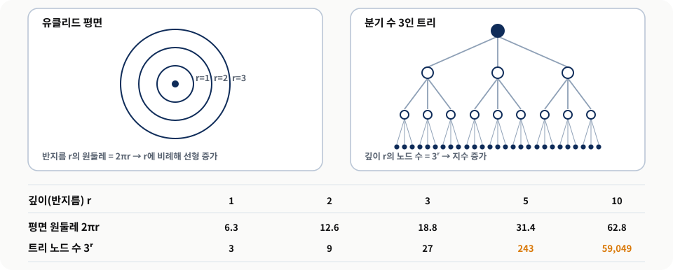
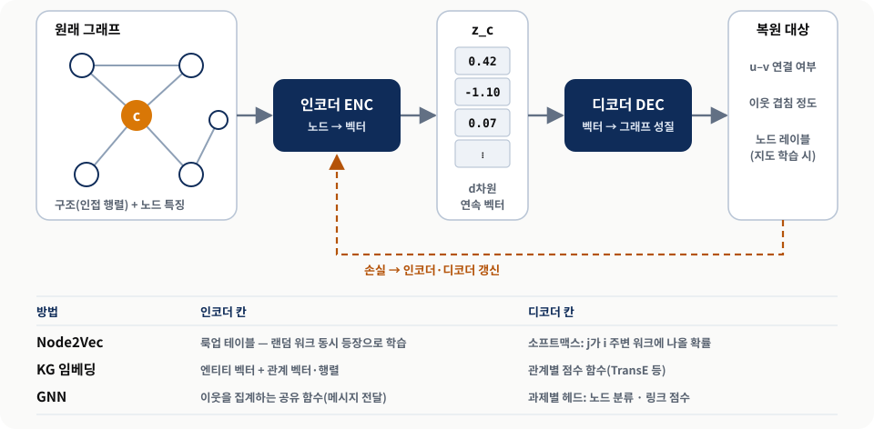
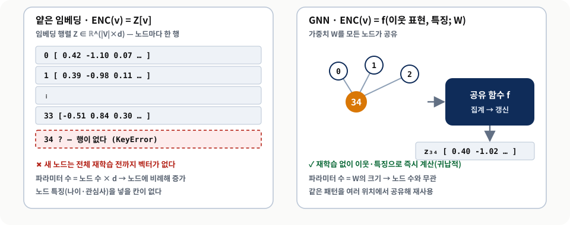
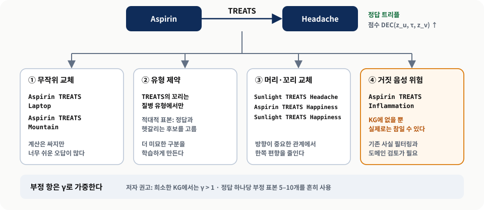
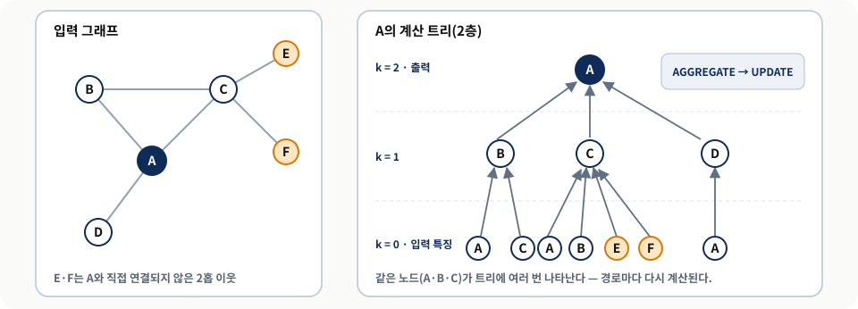
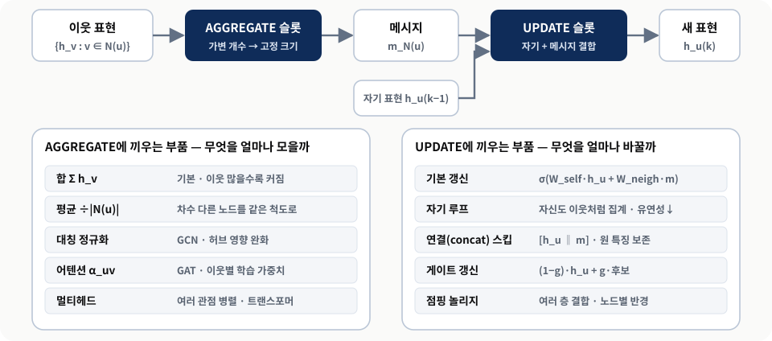
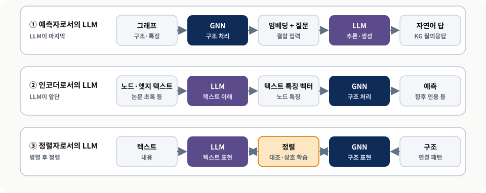

그래프 표현 학습과
그래프 신경망
손으로 만든 특징에서 학습된 표현으로 — 임베딩, 인코더–디코더, 메시지 전달
0. 핵심 요약
9장과 10장은 차수, PageRank, 공통 이웃 같은 특징을 사람이 직접 설계해 노드 분류와 링크 예측을 풀었다. 이 방식은 모델이 무엇을 보고 판단하는지 설명하기 쉽지만, 과제가 바뀔 때마다 특징을 다시 설계해야 하고 수백만 노드의 지식 그래프로 넓히기 어렵다. 11장은 이 병목을 그래프 표현 학습(graph representation learning, GRL)으로 넘는다. GRL은 노드·관계·부분 그래프를 임베딩, 즉 그래프의 구조와 의미를 보존하는 밀집 연속 벡터로 바꾸는 방법을 데이터에서 직접 학습하는 기법 묶음이다. 만들어진 벡터는 표준 ML 알고리즘이 그대로 소비할 수 있다.
장 전체를 꿰는 열쇠는 인코더–디코더 틀이다. 인코더가 노드를 벡터로 바꾸고, 디코더가 그 벡터만으로 연결 여부나 이웃 겹침 같은 그래프 성질을 되살리도록 학습하면, “좋은 벡터”의 기준이 “복원이 잘 되는 벡터”로 정의된다. 이 틀 위에서 Node2Vec, 지식 그래프 임베딩(TransE 등), 그래프 신경망(GNN)은 인코더와 디코더 칸을 서로 다르게 채운 구현으로 읽힌다. 장의 후반은 GNN 한 층을 AGGREGATE(이웃 메시지 모으기)와 UPDATE(자기 표현 고치기) 두 슬롯으로 나누고, 정규화·어텐션·스킵 연결·게이트·점핑 놀리지를 어느 슬롯에 끼우는 부품인지로 정리한 뒤, GNN과 LLM을 결합하는 세 경로로 마무리한다.
- 무엇을 학습하는가 — 노드를 벡터로 바꾸는 인코더. 디코더의 복원 과제가 그 인코더를 훈련하는 신호다.
- 어떤 벡터를 원하는가 — 공간(유클리드/쌍곡), 보존할 정보(위치적/구조적), 새 노드 대응(전이적/귀납적), 감독(지도/비지도) 네 축으로 정한다.
- 왜 GNN인가 — 룩업 테이블은 노드 수만큼 파라미터가 늘고 새 노드와 노드 특징을 다루지 못한다. 메시지 전달은 공유 함수로 이 넷을 함께 푼다.
- 어디서 조심하는가 — 부정 표본의 거짓 음성, 정규화로 잃는 차수 정보, 깊은 층의 과평활화, 그리고 교재 리스팅의 실행 결함이다.
0.1 장의 전체 논리
| 절 | 핵심 질문 | 장의 주장 | 실무에서 남는 판단 |
|---|---|---|---|
| 11.1 | 임베딩은 무엇을 보존해야 하나? | 공간·위치/구조·전이/귀납·감독 네 축이 임베딩의 성격을 정한다. | 과제와 그래프 변화 속도에서 축을 먼저 고른다. |
| 11.2 | 여러 방법을 한 틀로 볼 수 있나? | 인코더–디코더가 행렬 분해·랜덤 워크·GNN을 통합한다. | 디코더가 무엇을 복원하느냐가 임베딩의 뜻을 정한다. |
| 11.3 | 가장 단순한 인코더는 무엇이고 왜 부족한가? | 룩업 테이블은 단순한 기준선이지만 네 가지 한계가 있다. | 작고 정적인 그래프의 비교 기준으로 쓴다. |
| 11.4 | 관계 유형이 여러 개면? | 부정 표본 교차 엔트로피 손실과 관계별 디코더가 필요하다. | 부정 표본의 질과 디코더가 표현할 관계 패턴을 함께 고른다. |
| 11.5 | 노드마다 벡터를 외우지 않으려면? | 이웃 메시지를 반복 집계하는 GNN이 k-홉 정보를 담는다. | 층 수 = 정보 반경이라는 트레이드오프를 관리한다. |
| 11.6 | 기본 GNN을 어떻게 강화하나? | 정규화·어텐션은 집계를, 스킵·게이트·JK는 갱신을 바꾼다. | 계산 비용·과제·그래프 성질로 부품을 조합한다. |
| 11.7 | GNN과 LLM은 어떻게 만나나? | 예측자·인코더·정렬자 세 경로로 결합한다. | 텍스트와 구조 중 어느 쪽이 결정적인지에서 출발한다. |
1. 왜 표현을 학습하는가
- 수작업 특징은 해석이 쉽지만 과제마다 재설계가 필요하고 대규모 그래프로 넓히기 어렵다.
- GRL은 딥러닝으로 특징을 자동 학습해 노드·관계·부분 그래프를 밀집 벡터로 바꾼다.
- 임베딩의 핵심 약속은 벡터 공간의 거리가 원래 그래프의 관련 성질을 반영한다는 것이다.
1.1 수작업 특징 공학의 벽
지식 그래프 위에서 노드 분류를 하려면 노드를 숫자 벡터로 바꿔야 한다. 9–10장에서는 그 숫자를 사람이 골랐다. 차수(연결 수), 중심성, 공통 이웃 수, 특정 유형의 경로 수가 대표적이다. 이 방식의 장점은 투명성이다. 모델이 “차수가 높아서” 또는 “의심 계좌와 2홉 거리라서” 판단했다고 설명할 수 있다. 저자들도 수작업 접근이 해석 가능성과 직관을 쌓는 데 뛰어나다고 평가한다.
문제는 비용이다. 단순한 분류 과제조차 효과적인 특징을 설계·구현하는 데 상당한 노력이 들고, 그 특징은 다른 과제로 잘 옮겨지지 않는다. 노드와 관계가 수백만 개인 실제 지식 그래프에서는 어떤 구조 패턴이 중요한지 사람이 미리 다 열거하기 어렵다. 저자들은 이것을 수작업 접근의 확장성 문제로 규정하고 11장의 출발점으로 삼는다(교재 §11 도입부).
1.2 그래프 표현 학습과 임베딩
그래프 표현 학습(GRL)은 사람의 특징 설계 대신 딥러닝 기법으로 그래프 구조와 노드 속성에서 직접 표현을 학습한다. 그 결과물이 임베딩(embedding)이다. 임베딩은 노드(또는 관계, 부분 그래프) 하나를 [0.42, -1.10, 0.07, …] 같은 고정 길이 실수 벡터로 나타내며, 그래프의 구조적·의미적 성질을 보존하도록 만들어진다. 이렇게 만든 벡터는 로지스틱 회귀, 군집, 최근접 이웃 검색 같은 표준 ML 알고리즘이 바로 쓸 수 있다.
한 번도 가 본 적 없는 도시를 설명한다고 하자. 모든 거리와 교차로를 목록으로 줄 수도 있고(이산 표현 — 노드와 관계), 각 장소에 좌표를 붙인 지도를 줄 수도 있다(연속 표현 — 임베딩). 지도가 있으면 “두 장소가 얼마나 가까운가”를 계산 한 번으로 답할 수 있다. 교재 그림 11.1의 “노드 임베딩 문제”가 바로 이 지도를 학습하는 인코더 함수를 찾는 문제다.
비유의 한계. 지도의 좌표는 위도·경도처럼 각 축의 뜻이 정해져 있지만, 임베딩의 각 차원에는 보통 사람이 붙일 이름이 없다. 또 무엇을 “가깝다”고 정의할지(직접 연결? 비슷한 역할?)는 학습 목표가 정하며, 지도처럼 하나로 정해져 있지 않다.
1.3 세 세대의 흐름
GRL의 역사는 ML 전반의 발전과 닮은 세 세대로 정리된다(교재 §11.1). 1세대는 전통적인 수학·컴퓨터 과학에서 출발한 차원 축소 계열로, 복잡한 그래프 구조를 본질을 지키며 더 단순한 형태로 옮기는 데 집중했다. 2세대는 자연어 처리에서 왔다. word2vec이 “같은 문맥에 함께 나오는 단어는 비슷한 벡터”라는 발상으로 단어의 의미를 벡터에 담았듯, Node2Vec은 “랜덤 워크에서 함께 나오는 노드는 비슷한 벡터”라는 발상을 노드에 옮겼다. 3세대는 딥러닝, 특히 GNN이다. 이미지 인식이 픽셀에서 특징을 자동으로 뽑게 됐듯, GNN은 관계와 상호작용의 패턴을 자동으로 학습한다.

두 줄의 마지막 칸이 같다는 점이 읽는 법의 핵심이다. 바뀌는 것은 과제가 아니라 입력 벡터를 만드는 주체이며, 학습된 벡터의 차원 의미는 별도로 해석해야 한다. 세대 구분은 기법의 계보를 단순화한 것으로, 실제 연구에서는 세대가 겹친다. 교재 §11 도입부와 §11.1의 서술을 ds4th study가 흐름도로 재구성했다.“표현 학습이 나오면 수작업 특징은 필요 없다?” 저자들은 수작업 특징 공학에서 얻은 직관과 자동 표현 학습을 결합해야 확장 가능하면서도 해석 가능한 시스템을 만들 수 있다고 쓴다. 학습된 임베딩은 강력한 입력이지만 “왜 그렇게 판단했는가”에 대한 답을 스스로 주지 않으므로, 해석이 중요한 도메인에서는 수작업 특징이 기준선과 설명 도구로 남는다.
2. 임베딩을 고르는 네 개의 축
- 공간 — 대부분 유클리드면 충분하다. 계층 구조가 강하다는 증거가 있을 때만 쌍곡 공간을 고려한다.
- 보존 대상 — 위치적 임베딩은 전역 위치를, 구조적 임베딩은 지역 역할 패턴을 보존한다.
- 학습 방식 — 전이적 방식은 학습한 노드에만, 귀납적 방식은 새 노드에도 임베딩을 만든다.
- 감독 — 구조만으로 배우는 비지도와, 레이블로 목표를 주는 지도 학습이 있다.
2.1 기하 공간: 평평한 공간을 넘어서
이미지와 텍스트는 구조가 규칙적이다. 이미지의 픽셀은 경계를 제외하면 이웃이 늘 8개이고, 문장의 단어는 앞뒤로 하나씩 이웃을 가진다. 그래서 합성곱 신경망이나 순환 신경망 같은 고정 모양의 연산이 잘 맞는다. 그래프는 다르다. 어떤 노드는 이웃이 2개, 어떤 노드는 2,000개다. 이 불규칙성 때문에 규칙 격자용 기법을 그대로 쓸 수 없고, 임베딩을 어떤 기하 공간에 둘지도 질문이 된다(교재 §11.1.1, 교재 그림 11.2).
유클리드 공간은 직선 거리로 거리를 재고 피타고라스 정리가 성립하는 익숙한 공간이다. 두 점의 거리는 좌표 차의 제곱합의 제곱근이며, 공간의 성질이 위치와 무관하게 균일하다. 대부분의 ML 모델과 많은 그래프 임베딩이 이 공간을 가정한다. 쌍곡 공간(hyperbolic space)은 음의 곡률을 가진 공간으로, 중심에서 멀어질수록 “쓸 수 있는 자리”가 지수적으로 늘어난다. 좌표로 표현되는 점은 같지만, 같은 좌표 차이라도 경계 근처에서는 훨씬 큰 거리를 뜻하고 유사도 계산에 전용 거리 공식이 필요하다.
이 차이가 왜 중요한지는 트리를 떠올리면 분명하다. 분기 수가 3인 트리는 깊이 r에서 노드가 3r개로 지수적으로 늘어난다. 반면 유클리드 평면에서 반지름 r인 원의 둘레는 2πr로 선형으로만 늘어난다. 깊어질수록 늘어나는 노드를 평면에 넣으면 바깥쪽이 비좁게 눌려, 서로 다른 가지의 노드가 실제보다 가깝게 놓이는 왜곡이 생긴다. 조직도, 생물 분류 체계, 인터넷 위상처럼 계층이 뚜렷한 그래프에서 쌍곡 임베딩이 구조를 더 충실히 보존할 수 있다고 보는 이유다.

깊이 r에서 “필요한 자리(노드 수)”와 “있는 자리(원둘레)”를 나란히 놓고 읽는다. 원둘레는 공간이 노드를 얼마나 넉넉히 펼 수 있는지에 대한 직관적 대리 지표일 뿐이며, 실제 임베딩 왜곡은 차원 수와 학습 목표에도 좌우된다. 교재 그림 11.3의 캡션은 증가를 “차원 수”의 함수로 설명하지만, 쌍곡 임베딩의 논점은 고정 차원에서 반지름에 따른 증가이므로 이 그림은 반지름 기준으로 다시 그렸다. 쌍곡 평면의 원둘레가 \(2\pi\sinh r\)로 반지름에 대해 지수적으로 늘어 트리의 증가율과 같은 차수가 된다는 점은 리포트의 보충 계산이다.저자들은 유클리드 공간이 많은 응용에서 잘 작동한다고 먼저 못 박고, 그래프 구조가 비유클리드 성질의 이득을 본다는 강한 증거가 있을 때만 비유클리드 임베딩을 고려하라고 권한다. 쓰기로 했다면 거리 계산, 시각화, 해석까지 파이프라인 전체가 바뀐다는 점을 의식해야 한다. 이런 비표준 기하 구조 데이터에 딥러닝을 적용하는 연구 분야를 기하학적 딥러닝(geometric deep learning, GDL)이라고 부른다.
2.2 위치적 임베딩과 구조적 임베딩
그래프의 어떤 측면을 보존할지에 따라 임베딩은 두 성격으로 나뉜다(교재 §11.1.1, 저자들은 이 구분을 인용 문헌 [3]에 근거해 설명한다). 위치적(positional) 임베딩은 노드가 그래프 전체에서 어디에 있는지 — 누가 중심이고, 누가 커뮤니티를 잇고, 서로 몇 단계 떨어져 있는지 — 를 보존한다. 행렬 분해와 랜덤 워크 기법이 이 전역 성질을 포착한다. 구조적(structural) 임베딩은 노드 주변의 모양을 보존한다. 서로 멀리 떨어진 두 사람도 각자 친구 모임의 주최자처럼 비슷한 연결 패턴을 가지면 비슷하게 표현된다. 저자들은 이 지역 연결 패턴을 학습하는 데 GNN이 뛰어나다고 설명한다.
과제와의 궁합도 갈린다. 저자들에 따르면 위치적 임베딩은 전체 위상이 중요한 비지도 과제, 예컨대 링크 예측과 군집에서 유용하고, GNN이 만드는 구조적 임베딩은 지역 패턴이 레이블을 시사하는 노드 분류와 그래프 전체 분류 같은 지도 과제에 강하다. 다만 저자들 스스로 위치 정보를 GNN에 넣는 positional GNN 같은 최근 구조가 이 경계를 흐리고 있으며, 두 관점이 그래프 구조의 상보적 측면을 포착할 수 있다는 이론 연구도 있다고 덧붙인다. 따라서 이 구분은 경향이지 규칙이 아니다.
Node2Vec 원 논문 [R4]의 두 매개변수 p(되돌아가기)·q(안팎)는 워크의 성격을 바꾼다. q를 크게 하면 출발점 주변을 맴도는 너비 우선(BFS) 성향이 되어 지역 역할(구조적 동등성) 쪽 정보가, q를 작게 하면 멀리 뻗는 깊이 우선(DFS) 성향이 되어 커뮤니티 소속(위치) 쪽 정보가 더 담기는 경향이 있다. 즉 “랜덤 워크 = 위치적”은 기본 설정(p = q = 1)에서의 대략적 분류다. 3절의 실행 스냅샷이 이 경향을 작은 그래프에서 확인한다.
2.3 전이적 학습과 귀납적 학습
그래프에는 새 노드와 엣지가 계속 생긴다. 전이적(transductive) 학습은 고정된 노드 집합에 대해 임베딩 값을 직접 최적화한다. 정적인 그래프에서 잘 작동하며, 학습 때 본 노드 사이에서 새 정보를 추론할 수 있다 — 일부만 레이블이 있는 노드를 분류하거나, 관측된 노드 사이의 새 엣지를 예측하는 식이다. 대신 학습에 없던 노드에는 벡터가 없다. 귀납적(inductive) 학습은 임베딩 값이 아니라 노드 특징을 임베딩으로 바꾸는 매개변수화된 사상(parametric mapping)을 학습한다. 사상 자체를 최적화하므로 훈련 때 보지 못한 노드에도 적용할 수 있다.
교재의 전자상거래 예가 차이를 잘 보여 준다. 기존 사용자에게 기존 상품을 추천하는 데는 전이적 방식으로 충분하다. 그러나 새 사용자가 가입하거나 새 상품이 등록되면, 초기 상호작용과 프로필 정보만으로 의미 있는 임베딩을 만들 귀납적 방식이 필요하다.
전이적 학습은 특정 퍼즐 하나를 잘 푸는 법을 익히는 것이고, 귀납적 학습은 퍼즐 푸는 일반 전략을 익히는 것이다(교재의 비유). 경계: 귀납적 모델도 학습 분포와 아주 다른 새 노드 — 특징이 비어 있거나 연결이 하나도 없는 노드 — 에는 의미 있는 벡터를 주기 어렵다. “새 노드에 적용할 수 있다”와 “새 노드에 대해 정확하다”는 다른 주장이다.
2.4 감독의 역할
비지도 학습은 대화 내용은 모른 채 누가 누구와 이야기하는지만 보고 집단의 역학을 이해하려는 것과 같다. 그래프 구조 자체에 가치 있는 정보가 담겨 있다는 가정에 기대며, 저자들은 이 가정이 자주 맞는다고 본다. 지도 학습은 관찰한 상호작용에 대한 추가 맥락, 즉 레이블이 있는 경우로, 그 정보가 학습을 특정 목표 쪽으로 이끈다.
| 축 | 선택지 | 무엇을 보존·가정하나 | 먼저 물을 질문 |
|---|---|---|---|
| 기하 공간 | 유클리드 / 쌍곡 | 균일한 직선 거리 / 지수적으로 넓어지는 계층 | 그래프에 깊은 계층이 있고 평면 임베딩의 왜곡이 관측되는가? |
| 보존 대상 | 위치적 / 구조적 | 전역 위치·거리·커뮤니티 / 지역 연결 패턴·역할 | “같은 동네”가 중요한가, “같은 역할”이 중요한가? |
| 학습 방식 | 전이적 / 귀납적 | 고정 노드의 벡터 값 / 특징→벡터 사상 | 운영 중 새 노드가 들어오는가? |
| 감독 | 비지도 / 지도 | 구조 자체의 패턴 / 레이블이 정한 목표 | 신뢰할 만한 레이블이 충분한가? |
2.5 축이 결합되는 실제 사례
교재 §11.1.2는 네 축이 한 문제 안에서 함께 결정된다는 점을 세 사례로 보여 준다. 사례의 요점은 기법 이름이 아니라 문제 구조가 축의 선택을 끌어낸다는 데 있다. 아래 표는 교재 사례에 본문에서 다룬 전자상거래·가라테 클럽 예를 더해 정리했다.
| 사례 | 문제 구조 | 축의 선택(교재 서술) | 실패 경계(리포트 보충) |
|---|---|---|---|
| 대규모 소셜 네트워크 | 산업이 달라도 비슷한 직무, 핵심 영향력자와 가교 | 구조적=비슷한 역할, 위치적=영향력·가교, 신규 사용자 때문에 귀납적, 직무·기술 레이블로 지도 학습 | 추천 정확도가 레이블 품질과 신규 사용자의 초기 정보량에 묶인다. |
| 단백질 상호작용 | 생물 시스템의 계층 조직, 계속 늘어나는 발견 | 계층 때문에 쌍곡 공간이 유리할 수 있음, 새 발견 때문에 귀납적, 실험 데이터로 지도 학습 | 실험 레이블의 편향(많이 연구된 단백질 쏠림)이 그대로 학습된다. |
| 의료 KG | 넓은 범주에서 구체적 질환으로 내려가는 용어 계층 | 쌍곡 임베딩이 특히 적절, 구조적 임베딩으로 다른 분과의 유사 개념 탐색, 전문가 레이블로 지도 학습 | 임베딩 유사도는 임상 판단이 아니라 검토 후보다. |
| 전자상거래 추천 | 기존 사용자·상품과 계속 들어오는 신규 | 기존 쌍은 전이적으로 충분, 신규는 귀납적 필요 | 상호작용이 없는 완전 신규는 프로필 특징 품질에 좌우된다. |
| 가라테 클럽(Listing 11.1) | 34명, 강사와 관리자 갈등으로 두 파벌 | 유클리드, 랜덤 워크 기반(기본 설정은 위치적 성향), 전이적, 비지도 | 작은 정적 그래프라 다른 축의 이득을 시험하기 어렵다. |
저자들은 이 사례들을 통해 임베딩 전략의 선택이 단순한 기술 결정이 아니라 문제 구조에 대한 이해와 해결 목표를 반영하는 결정이라고 정리한다.
3. 인코더–디코더: 모든 방법을 읽는 하나의 틀
- 인코더는 그래프 구조(인접 행렬)와 노드 특징을 받아 노드마다 벡터를 만든다.
- 디코더는 그 벡터로 연결 여부·이웃 겹침·레이블을 복원하며, 복원 오차가 학습 신호다.
- Node2Vec은 인코더=랜덤 워크로 학습한 룩업 테이블, 디코더=소프트맥스 동시 등장 확률로 읽힌다.
3.1 인코더: 그래프를 벡터로
인코더–디코더 모델은 번역 시스템에 비유된다. 먼저 그래프 정보를 더 압축적이고 표준화된 표현으로 바꾸고(인코딩), 그 표현을 다시 의미 있는 그래프 성질로 옮긴다(디코딩)(교재 §11.2, 교재 그림 11.4). 인코더는 두 입력을 받는다. 노드가 어떻게 연결되는지 보여 주는 인접 행렬(노드 i와 j가 연결되면 (i, j) 칸이 1인 정사각 행렬)과, 각 노드의 성질을 담은 노드 특징이다. 인코더는 유연하다. 각 노드에 벡터를 하나씩 배정하는 룩업 테이블처럼 단순할 수도 있고, 구조와 특징을 함께 처리하는 신경망처럼 정교할 수도 있다. 전역 위치를 보존하는 인코더도, 지역 이웃 패턴을 우선하는 인코더도 있다.
3.2 디코더: 벡터로 그래프를 되살린다
디코더는 인코더가 만든 벡터로 원래 그래프의 중요한 성질을 복원하려 한다. 구조 보존이 목표면 두 노드가 연결돼 있는지 예측하고, 노드 유사성이 목표면 두 노드의 이웃 겹침 정도를 복원하며, 추가 감독이 있으면 노드 레이블을 예측한다. 이 복원 과제가 곧 학습 신호다. 디코더의 예측과 실제 그래프 성질의 차이를 줄이도록 최적화하면 인코더가 더 나은 표현을 배운다.
이 관점의 실용적 의미는 크다. 임베딩이 “무엇을 담는가”는 결국 디코더가 무엇을 복원하도록 훈련됐는가로 정해진다. 연결 여부를 복원하도록 훈련한 벡터는 링크 예측에, 레이블을 복원하도록 훈련한 벡터는 분류에 맞춰진다. 같은 그래프에서도 디코더가 다르면 다른 임베딩이 나온다.

왼쪽에서 오른쪽으로 순전파를, 주황 점선으로 학습 신호의 역방향 흐름을 읽는다. 표의 “칸 채우기”는 방법 사이의 공통 구조를 보이기 위한 단순화로, 실제 구현에서는 디코더가 학습 후 버려지고 인코더만 쓰이는 경우가 많다. 교재 §11.2와 교재 그림 11.4의 개념을 바탕으로 ds4th study가 3절·5절·6절의 사례 대응표를 덧붙여 새로 구성했다.3.3 틀이 주는 것: 통합과 트레이드오프
인코더–디코더 틀의 가치는 서로 달라 보이는 방법을 한 언어로 비교하게 한다는 데 있다. 행렬 분해, 랜덤 워크 기반 접근, GNN은 모두 인코딩–디코딩이라는 기본 패턴의 서로 다른 구현이다. 비교 축도 분명해진다. 단순한 인코더는 계산 효율이 높지만 복잡한 패턴을 덜 포착하고, 신경망 기반 인코더는 더 풍부한 표현을 배우지만 학습에 더 많은 데이터와 계산이 필요하다.
3.4 Node2Vec을 틀로 읽기
9장의 가라테 클럽 네트워크는 34명의 회원(노드)과 친분(엣지)으로 이뤄지며, 강사(노드 0)와 관리자(노드 33)의 갈등 이후 두 파벌로 갈라졌다. 저자들은 이 그래프로 Node2Vec [R4]을 인코더–디코더 틀에 대응시킨다(교재 §11.2.4).
- 인코딩 ① 랜덤 워크 생성 — 노드 0에서 출발해 친구의 친구로 걸어가는 경로
0 → 1 → 2 → 3같은 워크를 많이 만든다. Node2Vec은 넓게(여러 사교 모임) 탐색할지 깊게(끈끈한 친구 무리 안에) 머물지를 조절할 수 있다. - 인코딩 ② 벡터 만들기 — 워크 안에서 자주 가까이 나오는 회원은 비슷한 벡터를 갖도록 학습한다. 결과는 회원마다 벡터 하나를 저장한 표다.
- 디코딩 — 두 회원 i, j에 대해 “i의 벡터가 주어졌을 때 j가 워크에서 i 근처에 나올 확률”을 소프트맥스로 계산해, 친분 관계를 벡터에서 되살린다.
저자들은 이 과정이 드러내는 패턴을 셋으로 정리한다. 갈라진 뒤 같은 파벌이 된 회원은 비슷한 벡터를 갖는 경향이 있고(커뮤니티 구조), 양쪽에 친구가 있는 회원은 중간적 위치를 반영한 벡터를 얻으며(가교 회원), 강사와 관리자는 중심적이지만 대립하는 위치를 반영한 뚜렷이 다른 벡터를 얻는다(리더 역할).
# 교재 Listing 11.1의 핵심 설정(발췌) — 저장소 listings/13.1 … Network.py
node2vec = Node2Vec(G, dimensions=16, walk_length=10,
num_walks=20, p=1, q=1, workers=4)
model = node2vec.fit(window=5) # 내부적으로 gensim Word2Vec 학습
model.wv.similarity("0", "33") # 디코더 역할: 두 벡터의 코사인 유사도Listing 11.1은 학습된 16차원 벡터를 t-SNE로 2차원에 투영해 원래 그래프 옆에 그리고, 나머지 32명을 “강사와 관리자 중 누구와 더 비슷한가”로 나눠 파벌을 예측한다. 이때 파벌 레이블은 색칠과 채점에만 쓰이고 Node2Vec 학습에는 들어가지 않으므로 이 실험은 비지도다.
3.4.1 실행 스냅샷이 보여 주는 것
아래 수치는 교재의 실행 결과가 아니라, 이 저장소의 장 해설 노트북(src/ch11/11_chapter_guide.ipynb)에 저장된 출력이다. 2026-07-30 이전 커밋 기준이며, Python 3.10.18, node2vec 0.5.0, gensim 4.4.0 환경에서 교재 리스팅 파일을 수정 없이 실행했다. workers=4의 다중 스레드 학습 때문에 시드를 고정해도 소수점 아래 값은 실행마다 달라지므로, 절대값보다 대소 관계와 방향을 읽어야 한다.
| 측정 | 값 | 읽는 법 |
|---|---|---|
| 그래프 · 임베딩 | 34 노드 · 78 엣지 · 16차원 벡터 34개 | 노드마다 한 행 — 얕은 임베딩의 룩업 테이블(4절) |
| sim(0, 1) 강사–측근 | 0.9756 | 둘 다 높다. 작은 그래프에서 코사인 유사도는 전반적으로 양수이므로 상대 비교로만 해석한다. |
| sim(0, 33) 강사–관리자 | 0.871 | |
| 파벌 예측(0·33 제외) | 30/32 = 93.8% · 오분류 노드 8, 10 | 오분류 노드는 양쪽과 연결된 가교 위치와 겹치는 경향 — 모델 실패라기보다 네트워크의 실제 모호함 |
| p=1, q=1(교재 설정) | 분리도 0.072 · 거리상관 0.569 · 차수상관 0.057 · 정확도 93.8% | 편향 없는 랜덤 워크 |
| p=1, q=4(BFS 성향) | 분리도 0.139 · 거리상관 0.411 · 차수상관 0.236 · 정확도 93.8% | 차수상관이 가장 크게 오름 → 역할(구조적) 정보 쪽으로 기움 |
| p=1, q=0.25(DFS 성향) | 분리도 0.021 · 거리상관 0.512 · 차수상관 −0.067 · 정확도 84.4% | 이 작은 그래프에서는 오히려 파벌 분리가 약해짐 |
| p=0.25, q=1 | 분리도 0.132 · 거리상관 0.603 · 차수상관 0.084 · 정확도 96.9% | 되돌아가기 쉬운 워크가 이웃을 반복 관찰해 파벌 분리에 유리 |
노트북은 지름이 5인 34노드 그래프에서는 두 성향이 크게 갈리지 않는다고 스스로 경고한다. 위 표는 p·q가 임베딩에 담기는 정보의 방향을 바꾼다는 정성적 주장을 확인하는 수준이며, 어떤 설정이 일반적으로 더 낫다는 근거가 아니다.
t-SNE는 가까운 이웃 관계를 보존하도록 설계된 시각화 도구다. 투영된 그림에서 두 점 사이의 절대 거리를 읽어 “유사도가 이만큼”이라고 해석하면 안 된다. 군집이 몇 개로 갈리는지, 어떤 점이 두 군집 사이에 놓이는지 정도가 안전하게 읽을 수 있는 정보이고, 유사도는 원래 16차원 공간에서 계산해야 한다(저장소 해설 노트북의 주의 사항을 재정리).
4. 얕은 임베딩: 노드마다 벡터를 외운다
- 얕은 임베딩의 인코더는 룩업 테이블이다: \(\mathrm{ENC}(v) = \mathbf{Z}[v]\).
- 파라미터 비효율 · 공유 없음 · 특징 무시 · 전이적 성격이라는 네 한계가 있다.
- 작고 정적인 그래프, 제한된 계산 자원에서는 여전히 좋은 기준선이다.
4.1 룩업 테이블 인코더
얕은 임베딩(shallow embedding)은 인코더–디코더 틀의 가장 직접적인 구현이다. 인코더는 노드 수 × 차원 크기의 행렬 \(\mathbf{Z} \in \mathbb{R}^{|V| \times d}\)를 들고 있다가, 노드 v를 요청받으면 v에 해당하는 행을 돌려준다. 입력을 깊게 처리하거나 변환하지 않고 그대로 찾아보기만 하므로 “얕다”고 부른다. 사전에서 단어마다 전용 항목이 있는 것과 같다. 디코더는 그 벡터로 두 노드가 연결됐는지, 이웃이 얼마나 비슷한지를 복원하고, 그 복원 오차로 행렬 \(\mathbf{Z}\)의 값이 조정된다. 가라테 클럽이라면 자주 어울리는 회원끼리는 비슷한 벡터로, 거의 어울리지 않는 회원끼리는 다른 벡터로 밀려간다. 3절에서 실행한 Node2Vec의 model.wv가 바로 이 34×16 표다.
4.2 네 가지 한계
얕은 임베딩은 많은 응용에서 성공했지만, 저자들은 네 한계를 짚는다(교재 §11.3.2). 네 한계는 따로 떨어진 결함이 아니라 “인코더가 값을 외우는 표”라는 한 가지 설계에서 함께 나온다는 점이 중요하다. 그래서 인코더를 표가 아닌 함수로 바꾸는 GNN이 네 한계를 한꺼번에 겨냥한다.
| 한계 | 무엇이 문제인가 | 가라테 클럽에서의 모습 | GNN의 대응 |
|---|---|---|---|
| 파라미터 비효율 | 노드마다 벡터가 따로 있어 파라미터가 노드 수에 비례 | 34×16 = 544개. 사용자 수백만이면 벡터 수백만 개 | 노드가 공유하는 가중치 W — 크기가 노드 수와 무관 |
| 파라미터 공유 없음 | 다른 위치의 같은 패턴을 재사용하지 못함 | 다른 모임의 비슷한 역할을 회원마다 따로 학습 | 같은 함수가 모든 노드에 적용되어 패턴을 공유 |
| 특징 무시 | 노드 속성을 넣을 자연스러운 자리가 없음 | 나이·관심사·직책을 알아도 반영 불가 | 노드 특징을 초기 표현으로 입력 |
| 전이적 성격 | 학습에 없던 노드는 벡터가 없어 재학습 필요 | 새 회원 34의 행이 없어 조회 실패 | 이웃과 특징으로 새 노드의 벡터를 즉시 계산(귀납적) |

두 패널의 아래쪽 세 줄이 표의 네 한계와 일대일로 대응하도록 읽는다. 오른쪽의 벡터 값은 동작을 보이기 위한 예시이며 실제 출력이 아니다. 귀납적으로 “만들 수 있다”는 것과 그 벡터가 “정확하다”는 것은 별개라는 점도 함께 읽어야 한다. 교재 §11.3.2의 네 한계와 저장소 노트북 실습 11-B의 시나리오를 ds4th study가 한 도형으로 재구성했다.저장소 노트북의 실습 11-B는 이 차이를 실제로 재현한다. 학습된 model.wv에서 새 노드 "34"를 조회하면 KeyError가 난다. 대신 새 노드를 강사 쪽 회원 0·1·2와 잇고 그 세 이웃의 벡터를 평균하면, 재학습 없이 만든 벡터의 코사인 유사도가 강사(0)와 +0.9903, 관리자(33)와 +0.9173으로 강사 쪽에 가깝게 나온다. 이웃을 관리자 쪽(33·32·30)으로 바꾸면 결과가 뒤집힌다. 이 평균은 6절의 AGGREGATE를 한 번 적용한 것과 같은 모양이다. 다만 여기서 쓰인 이웃 벡터 자체는 전이적으로 학습된 값이므로 이것은 진짜 귀납적 GNN이 아니라 그 씨앗을 보여 주는 실험이다.
저자들은 한계에도 불구하고 얕은 임베딩이 역사적·실무적으로 중요하다고 강조한다. GRL의 근본 과제를 이해하게 해 주고, 더 정교한 방법과 비교할 기준선이 되며, 그래프가 비교적 작고 정적이며 계산 자원이 제한될 때는 단순함 자체가 장점이다.
5. 지식 그래프 임베딩: 관계의 종류까지 담는다
- KG에서는 “연결됐는가”뿐 아니라 “어떻게 연결됐는가”를 인코딩해야 한다.
- 모든 쌍을 비교하는 손실은 계산·희소성 문제로 불가능하다 → 부정 표본 교차 엔트로피.
- 관계 디코더(TransE·RESCAL·DistMult·ComplEx)마다 표현할 수 있는 관계 패턴이 다르다.
5.1 다중 관계 그래프라는 문제
가라테 클럽의 엣지는 모두 “친분” 한 종류였다. 이 책이 구축해 온 지능형 자문 시스템의 지식 그래프는 다르다. 약물·질병·유전자·단백질이 수십 가지 관계로 연결된 다중 관계 그래프(multirelational graph)다. 예를 들어 (Aspirin, TREATS, Headache), (Aspirin, INHIBITS, COX-2), (Inflammation, CAUSES, Headache)라는 세 트리플은 같은 개체들이라도 관계 유형이 결정적임을 보여 준다. 이런 그래프의 임베딩은 엔티티 사이의 빠진 관계를 예측하는 KG 완성(KG completion)에 특히 중요하다. 이를 위해 두 부품이 필요하다. 임베딩이 구조를 얼마나 잘 담았는지 재는 손실 함수와, 관계 유형을 구분해 점수를 매기는 다중 관계 디코더다.
5.2 부정 표본 교차 엔트로피 손실
예측한 연결과 실제 구조를 평균 제곱 오차로 모든 노드 쌍에 대해 비교하는 방법은 두 가지 이유로 현실적이지 않다. 첫째, 계산 효율: 사용자 100만 명이면 잠재적 연결이 1조 개에 가깝다. 둘째, 희소성: 실제 그래프 대부분의 노드 쌍은 연결돼 있지 않아, 정답 쌍이 압도적으로 적은 불균형을 다뤄야 한다. 그래서 일반적으로 부정 표본 추출(negative sampling)과 교차 엔트로피 손실을 함께 쓴다(교재 §11.4.1).
$$\mathcal{L} = \sum_{(u,\tau,v)\in\mathcal{E}} -\log\sigma\big(\mathrm{DEC}(z_u,\tau,z_v)\big) \;-\; \gamma\,\mathbb{E}_{v_n\sim P_{n,u}(V)}\Big[\log\sigma\big(-\mathrm{DEC}(z_u,\tau,z_{v_n})\big)\Big]$$읽는 순서는 이렇다. 합은 KG의 실제 트리플(머리 u, 관계 τ, 꼬리 v) 전체에 걸친다. \(\mathrm{DEC}\)는 트리플이 그럴듯한 정도를 점수로 매기는 디코더이고, 시그모이드 \(\sigma\)가 점수를 0–1 확률로 바꾼다. 첫 항은 실제 트리플에 낮은 확률을 주면 커지므로, 정답 트리플의 점수를 끌어올린다. 둘째 항은 꼬리를 분포 \(P_{n,u}\)에서 뽑은 다른 엔티티 \(v_n\)로 바꾼 부정 표본에 대해, 점수의 부호를 뒤집어 확률을 계산하므로 부정 표본의 점수를 끌어내린다. \(\gamma\)는 두 목표의 균형을 정한다. 모든 쌍 대신 정답 트리플과 소수의 부정 표본만 보면 되므로 계산이 효율적이다.
저자들은 KG가 보통 희소하므로 거짓 관계를 제대로 가려내는 쪽을 강조하기 위해 \(\gamma > 1\)을 쓰는 경우가 많고, 실무에서는 정답 하나당 부정 표본 5–10개를 쓸 수 있다고 적는다. 이 값들은 저자들의 실무 권고이며, 데이터와 디코더에 따라 조정해야 할 하이퍼파라미터다.
5.3 무엇을 오답으로 고를 것인가
부정 표본 추출의 효과는 어떤 오답을 고르느냐에 크게 좌우된다. 가장 단순한 방법은 무작위로 엔티티를 뽑는 것이다. (Aspirin, TREATS, Laptop), (Aspirin, TREATS, Mountain)처럼 계산은 싸지만 두 가지 한계가 있다. 하나는 거짓 음성이다. 무작위로 고른 트리플이 실제로는 KG에 있는 사실일 수 있어서, 일부 시스템은 이런 우연한 참을 확인해 걸러 낸다. 다른 하나는 너무 쉬운 오답이다. 명백히 틀린 표본은 모델에 의미 있는 패턴을 가르치지 못한다.
이를 보완하는 전략이 유형 제약 표본 추출(TREATS의 꼬리 자리에는 질병 유형만 뽑아 더 미묘한 구분을 강요)과 적대적 표본 추출(정답과 헷갈릴 만한 어려운 표본을 골라 더 세밀한 이해를 유도)이다. 또 머리, 꼬리, 또는 둘 다를 바꿔 부정 표본을 만들 수 있다 — “Sunlight TREATS Headache”, “Aspirin TREATS Happiness”, “Sunlight TREATS Happiness”. 저자들은 관계 방향이 중요한 KG에서는 머리와 꼬리를 모두 교체 대상으로 고려해야 편향을 막는 데 도움이 된다고 쓴다.

위의 정답 트리플에서 아래 네 칸으로 내려가며 “오답을 어떻게 고르느냐”의 선택지로 읽는다. 네 칸은 서로 배타적인 방법이 아니라 조합해 쓰는 관점이다. 넷째 칸의 Inflammation 예는 저자들이 부정 표본의 예로 든 트리플이지만, 아스피린이 항염 작용을 하는 약물이라는 점에서 이 리포트는 이를 거짓 음성 위험의 사례로 다시 읽었다. 교재 §11.4.1의 서술을 ds4th study가 재구성했다.교재는 “aspirin treats headache”의 부정 표본으로 (Aspirin, TREATS, COX-2)와 (Aspirin, TREATS, Inflammation)을 든다. 앞의 것은 단백질이라 유형부터 어긋나는 쉬운 오답이지만, 뒤의 것은 의학적으로 참에 가까운 진술이다. KG에 그 트리플이 없다는 것과 그 진술이 거짓이라는 것은 다르다(열린 세계 가정). 의료처럼 KG가 불완전한 도메인에서는 부정 표본을 기존 사실로 거르는 것만으로 부족하고, 높은 점수를 받은 “부정 표본”을 오히려 KG 보강 후보로 검토하는 절차가 필요하다.
5.4 관계별 디코더
손실 함수가 정해졌으면, 관계 유형을 구분해 점수를 매기는 디코더가 필요하다. 디코더는 KG에 나타나는 관계 패턴을 표현할 수 있어야 한다. 대칭과 비대칭(similar_to는 A→B면 B→A지만 causes는 아니다), 합성(관계를 이어 붙여 새 관계를 얻는 패턴), 역관계(A contains B면 B part_of A)가 대표적이다. 교재는 세 계열을 소개한다(교재 §11.4.2).
| 디코더 | 관계 표현과 점수 | 교재가 든 강점·약점 | 리포트 보충 |
|---|---|---|---|
| TransE [R5] 변환 기반 | 관계 = 벡터 이동 \(-\lVert z_u + r_\tau - z_v \rVert\) | 직관적. 합성 패턴에 강하지만 다대일 관계에 약하다. | 대칭 관계는 \(r_\tau \approx 0\)을 강요해 표현이 어렵다. |
| RESCAL [R6] 행렬 기반 | 관계 = 행렬 변환 \(z_u^\top M_\tau z_v\) | 표현력이 크지만 파라미터가 많다. | 관계마다 d×d 행렬. d = 100, 관계 100종이면 관계 파라미터만 100만 개. |
| DistMult [R7] 의미 매칭 | 대각 행렬로 단순화 \(\sum_i z_{u,i}\, r_{\tau,i}\, z_{v,i}\) | 관계를 고려한 유사도를 측정한다. | 점수가 u와 v에 대해 대칭이라 비대칭 관계를 구분하지 못한다. |
| ComplEx [R8] 의미 매칭 | 복소수 벡터 \(\mathrm{Re}\big(\sum_i z_{u,i}\, r_{\tau,i}\, \overline{z_{v,i}}\big)\) | 복소수로 비대칭 관계를 우아하게 다루지만 합성 패턴은 덜 효과적일 수 있다. | 켤레 복소수가 방향을 구분하게 해 DistMult의 대칭 한계를 푼다. |
교재가 RESCAL의 파라미터 부담을 “엔티티 1,000개와 관계 100종이면 관계에만 수백만 개”로 설명하는 부분은, 관계 파라미터가 엔티티 수가 아니라 임베딩 차원 d와 관계 수에 따라 정해진다는 점을 덧붙여 읽어야 한다(표의 리포트 보충 계산). 저자들의 결론은 디코더 선택이 모델이 학습할 수 있는 패턴의 종류를 크게 좌우한다는 것이다.
교재는 합성 패턴의 예로 “약물 A가 질병 B를 치료하고 B가 질병 C의 한 유형이면, A가 C를 치료한다고 추론할 수도 있다”를 든다. 저자들도 “may”라는 조건부 표현을 쓴다. 하위 유형을 치료한다고 상위 범주 전체를 치료하는 것은 아니므로, 임베딩이 학습한 합성 점수는 사실이 아니라 검토할 후보 관계로 다뤄야 한다. 임베딩 기반 KG 완성의 출력에는 “추론 후보” 상태와 근거 경로를 함께 남기는 것이 이 리포트의 권고다.
6. 메시지 전달: 이웃에게서 표현을 만든다
- 매 반복에서 노드는 이웃 메시지를 모으고(AGGREGATE) 자기 표현을 갱신한다(UPDATE).
- k번 반복하면 각 노드의 표현에 k-홉 이웃의 구조·특징 정보가 담긴다.
- 합 연산 덕분에 이웃 수가 노드마다 달라도 같은 층을 쓸 수 있다.
6.1 신경망의 대화
GNN은 신경 메시지 전달(neural message passing)이라는 메커니즘으로 얕은 임베딩의 한계를 넘는다(교재 §11.5). 저자들은 이를 그래프 전체에서 벌어지는 “대화”에 비유한다. 대화는 라운드로 진행되고, 한 라운드마다 정보가 그래프를 따라 한 걸음 더 멀리 간다. 각 라운드에서 모든 노드는 ① 이웃에게서 메시지를 모으고, ② 관련 정보를 추출하도록 처리한 뒤, ③ 그것으로 자기 표현을 갱신한다. 이를 두 함수로 형식화한 것이 AGGREGATE(이웃 메시지를 모아 결합)와 UPDATE(모은 메시지로 노드 표현을 갱신)다.
관심사를 분석하는 소셜 네트워크라면 이렇다. 처음에 각 사용자의 표현은 스스로 밝힌 관심사다. 첫 라운드에서 친구들의 관심사가, 둘째 라운드에서 친구의 친구들의 관심사가 들어온다. 몇 라운드가 지나면 각 사용자의 표현은 더 넓은 사회적 반경의 관심사 패턴을 담는다.
“대화”라는 비유는 정보가 한 홉씩 퍼진다는 점을 잘 보여 주지만, 실제 GNN의 메시지는 문장이 아니라 벡터이고, 모든 노드가 같은 가중치로 동시에 갱신된다. 사람의 대화처럼 누가 무엇을 말할지 고르는 것은, 어텐션(7절)을 쓰지 않는 한 일어나지 않는다.
6.2 왜 작동하는가: k-홉과 두 종류의 정보
메시지 전달을 k번 반복하면 각 노드의 표현은 k-홉 이웃의 정보를 담는다. 이 점진적 수집은 두 정보를 함께 모은다. 구조 정보: 분자 그래프에서 몇 라운드 뒤 원자의 표현은 그 원자가 벤젠 고리 같은 구조의 일부라는 사실을 담을 수 있다. 특징 정보: 인용 네트워크에서 논문의 표현은 관련 논문들의 특징을 점차 흡수해 학계에서의 위치를 더 잘 드러낸다. 교재 그림 11.5는 이 과정이 대상 노드 주변의 이웃을 펼친 트리 모양의 계산 그래프를 이룬다는 점을 보여 준다.

오른쪽 트리를 아래(k = 0, 입력 특징)에서 위(k = 2, 출력)로 읽는다. 트리에 A·B·C가 여러 번 나타나는 것은 같은 노드가 서로 다른 경로로 다시 계산된다는 뜻이며, 실제 구현은 층마다 모든 노드를 한 번에 갱신하므로 이 중복을 행렬 연산으로 처리한다. 교재 그림 11.5의 개념을 ds4th study가 새 예시 그래프로 다시 그렸다.6.3 기본 GNN 모델
기본 GNN은 노드 u의 k번째 반복 표현을 다음처럼 정의한다(교재 §11.5.3).
$$h_u^{(k)} = \sigma\Big( W_{\text{self}}^{(k)}\, h_u^{(k-1)} + W_{\text{neigh}}^{(k)} \sum_{v\in\mathcal{N}(u)} h_v^{(k-1)} + b^{(k)} \Big)$$\(h_u^{(k)}\)는 반복 k에서 u의 표현, \(W_{\text{self}}\)와 \(W_{\text{neigh}}\)는 학습되는 가중치 행렬, \(\sigma\)는 ReLU나 tanh 같은 비선형 활성화, \(b\)는 흔히 생략되는 편향이다. 가중치는 반복(층) 사이에서 공유할 수도, 층마다 따로 학습할 수도 있다. 이 식은 표준 신경망 층과 닮았지만, 고정 크기 입력 대신 합으로 노드마다 다른 수의 이웃을 처리한다는 점이 다르다. 두 슬롯으로 나눠 쓰면 구조가 더 잘 보인다.
$$m_{\mathcal{N}(u)} = \mathrm{AGGREGATE}\big(\{h_v^{(k-1)} : v\in\mathcal{N}(u)\}\big) = \sum_{v\in\mathcal{N}(u)} h_v^{(k-1)}, \qquad h_u^{(k)} = \mathrm{UPDATE}\big(h_u^{(k-1)}, m_{\mathcal{N}(u)}\big)$$여기서 \(W\)는 모든 노드가 공유한다. 4절의 네 한계에 대한 답이 이 한 줄에 들어 있다. 파라미터 수는 노드 수와 무관하고, 같은 패턴이 모든 위치에 공유되며, 초기 표현 \(h^{(0)}\)에 노드 특징을 넣을 수 있고, 새 노드도 이웃만 있으면 표현을 계산할 수 있다.
6.4 자기 루프 변형
중요한 변형은 그래프에 자기 루프를 더해, 노드 자신을 이웃처럼 집계에 넣는 것이다. 그러면 AGGREGATE와 UPDATE가 하나로 합쳐진다.
$$h_u^{(k)} = \mathrm{AGGREGATE}\big(\{h_v^{(k-1)} : v\in\mathcal{N}(u)\cup\{u\}\}\big)$$저자들은 이 방식이 구현이 단순하고, 파라미터 공유로 과적합을 막는 데 자주 도움이 되며, 학습 안정성을 높일 수 있다고 쓴다. 대가는 유연성이다. 노드 자신의 정보를 이웃과 똑같이 다루므로, 자기 상태와 이웃 정보를 다르게 섞을 여지가 사라진다. 그래서 노드 자신의 특징과 이웃 특징의 구분이 결정적인 과제에서는 표준 방식이, 그렇지 않은 과제에서는 더 단순하고 견고한 자기 루프 방식이 맞을 수 있다. 12장의 예제는 이 자기 루프 방식을 쓴다.
7. 두 슬롯을 강화하는 부품들
- AGGREGATE 쪽 — 정규화는 이웃 수 차이를, 어텐션은 이웃 중요도 차이를 다룬다.
- UPDATE 쪽 — 스킵 연결·게이트·점핑 놀리지는 자기 정보 보존과 과평활화를 다룬다.
- GNN 어텐션은 트랜스포머 어텐션과 같은 계열이며, 이 연결이 GNN–LLM 결합의 다리가 된다.
7.1 왜 부품이 필요한가
전통적인 신경망이 단순한 퍼셉트론에서 스킵 연결·어텐션·정규화 층을 갖춘 구조로 발전했듯, GNN도 같은 혁신을 받아들일 수 있다. 단, 불규칙한 연결과 노드마다 다른 이웃 크기라는 그래프의 성질을 존중하도록 맞춰야 한다(교재 §11.6). 세 장치의 역할은 다음과 같다. 스킵(잔차) 연결은 정보가 층을 건너뛰는 지름길로, 이전 층의 노드 특징을 보존해 여러 번의 메시지 전달 뒤 노드 표현이 서로 너무 비슷해지는 과평활화(over-smoothing)를 막는 데 도움을 주고, 기울기 흐름을 유지해 더 깊은 GNN을 가능하게 한다. 어텐션은 이웃의 기여를 과제 관련성에 따라 다르게 가중한다. 정규화 층(층 정규화, 배치 정규화)은 이웃 수가 크게 다른 노드의 특징을 적절히 스케일링해 학습을 안정시킨다.

위쪽 흐름에서 슬롯의 위치를 먼저 확인한 뒤, 아래 두 목록을 “이 부품이 어느 슬롯을 바꾸는가”로 읽는다. 목록은 교재 §11.6이 다룬 부품에 한정하며, 실제 아키텍처는 한 층에 여러 부품을 함께 쓰고 슬롯 경계가 구현마다 다를 수 있다. 교재 §11.5.3과 §11.6의 서술을 ds4th study가 슬롯 지도로 재구성했다.7.2 이웃 정규화
합으로 집계하면 이웃이 3개인 노드와 3,000개인 노드의 메시지 크기가 완전히 달라 수치 불안정과 학습 어려움이 생긴다. 가장 단순한 해결은 합 대신 평균을 내는 것이다. 더 정교한 대칭 정규화는 Kipf와 Welling의 그래프 합성곱 네트워크(GCN) [R9]가 대중화했다.
$$m_{\mathcal{N}(u)} = \frac{\sum_{v\in\mathcal{N}(u)} h_v}{|\mathcal{N}(u)|} \qquad\text{(평균)}, \qquad m_{\mathcal{N}(u)} = \sum_{v\in\mathcal{N}(u)} \frac{h_v}{\sqrt{|\mathcal{N}(u)|\,|\mathcal{N}(v)|}} \qquad\text{(대칭 정규화)}$$대칭 정규화는 받는 노드와 보내는 노드의 차수를 모두 반영한다. 인용 네트워크라면 분야를 가리지 않고 수천 번 인용된 논문의 영향력을 줄여, 그 논문이 더 전문적이고 관련 있는 인용보다 메시지를 지배하지 않게 한다. 반대로 정규화는 손실이 있는 연산이다. 정규화 뒤에는 학습된 임베딩으로 차수가 다른 노드를 구별하기 어려워진다. 저자들은 정규화가 노드 특징 정보가 구조 정보보다 훨씬 유용한 과제, 또는 차수 범위가 매우 넓어 최적화가 불안정한 경우에 가장 도움이 된다고 정리한다.
7.3 이웃 어텐션
정규화는 이웃 수 차이를 다루지만, 정규화된 범위 안에서 이웃을 동등하게 취급한다. 그러나 모든 관계가 같은 무게는 아니다. 어떤 친분은 사용자의 관심사를 예측하는 데 다른 친분보다 더 중요하다. 어텐션은 이웃 관계마다 학습 가능한 가중치를 주어 어떤 이웃이 과제에 중요한지 배운다. 저자들은 이런 형태의 어텐션을 처음 적용한 GNN으로 Veličković 등의 그래프 어텐션 네트워크(GAT) [R10]를 든다.
$$m_{\mathcal{N}(u)} = \sum_{v\in\mathcal{N}(u)} \alpha_{u,v}\, h_v, \qquad \alpha_{u,v} = \frac{\exp\big(a^\top [W h_u \oplus W h_v]\big)}{\sum_{v'\in\mathcal{N}(u)} \exp\big(a^\top [W h_u \oplus W h_{v'}]\big)}$$\(a\)는 학습되는 어텐션 벡터, \(W\)는 학습되는 행렬, \(\oplus\)는 이어 붙이기(concatenation)다. 분모가 이웃 전체의 합이므로 한 노드의 이웃 가중치 합은 1이 된다. 어텐션은 이웃의 중요도가 과제나 맥락에 따라 크게 다를 때, 그래프에 잡음이나 무관한 연결이 있을 때, 노드 사이의 복잡한 비선형 관계를 포착해야 할 때 특히 가치가 있다.
교재는 GraphSAGE [R11]를 어텐션을 집계 단계에 통합한 실용적 예로 소개한다. 그러나 GraphSAGE 원 논문이 제안한 집계 함수는 평균, LSTM, 풀링 세 가지이며, 이웃별 학습 가중치로 집계하는 원형은 위의 GAT다. GraphSAGE의 고유한 기여는 이웃 표본 추출로 대규모 그래프에서 귀납적 학습을 가능하게 한 것과, 7.5에서 다루는 연결(concat) 갱신이다. 발표에서는 “어텐션 집계 = GAT”, “표본 추출·연결 갱신·귀납적 학습 = GraphSAGE”로 구분해 설명한다.
| 부품 | 해결하는 문제 | 학습 파라미터 | 대가·실패 경계 |
|---|---|---|---|
| 합(기본) | 가변 개수 이웃을 고정 크기로 | 없음 | 차수가 큰 노드의 메시지가 커져 불안정 |
| 평균 | 차수가 다른 노드를 같은 척도로 | 없음 | 차수 정보 손실 — 허브와 말단을 구별하기 어려움 |
| 대칭 정규화(GCN) | 보내는 쪽 차수까지 반영해 허브 영향 완화 | 없음 | 역시 손실 연산. 구조 신호가 중요한 과제에서 불리할 수 있음 |
| 어텐션(GAT) | 이웃마다 다른 중요도, 잡음 연결 억제 | a, W | 계산·메모리 증가. 가중치가 곧 인과적 설명은 아님 |
| 멀티헤드 어텐션 | 여러 관계 측면을 병렬로 포착 | 헤드 수만큼 | 헤드 수·차원 분할을 맞춰야 함(Listing 11.2 결함 참조) |
7.4 멀티헤드 어텐션과 트랜스포머
GNN의 어텐션은 LLM의 뼈대인 트랜스포머와 깊이 연결된다. 트랜스포머가 문장의 각 단어가 다른 모든 단어에 주의를 기울이게 하듯, 그래프 어텐션 네트워크는 각 노드가 이웃에게 선택적으로 주의를 기울이게 한다. 한 개의 어텐션만으로는 데이터의 관련 패턴을 다 잡지 못한다는 통찰이 두 분야 모두에서 멀티헤드 어텐션을 낳았다. 여러 독립 어텐션을 병렬로 두고 각 헤드가 이웃 관계의 다른 측면에 집중하게 한다. 분자 그래프라면 한 헤드는 화학 결합 유형에, 다른 헤드는 공간 배치에 집중할 수 있다(Listing 11.2).
Listing 11.3은 트랜스포머 방식의 질의(Q)·키(K)·값(V) 투영과 축척된 내적 어텐션을 노드와 이웃에 적용하고, Listing 11.4는 트랜스포머의 위치 인코딩처럼 노드 차수에서 학습되는 구조 인코딩을 노드 특징에 더한다. 저자들은 이런 트랜스포머식 어텐션의 장점으로 병렬화를 통한 대규모 이웃 처리, 헤드별 특화, 어텐션 가중치를 통한 해석 가능성을 든다.
“병렬화로 큰 이웃을 효율적으로 처리한다”는 주장은 연산을 동시에 실행할 수 있다는 뜻이지 비용이 작다는 뜻이 아니다. 어텐션 점수는 이웃마다(헤드마다) 계산되므로 이웃이 수천 개인 허브에서는 메모리가 급격히 늘어, 실무에서는 이웃 표본 추출이나 상한이 함께 필요하다. 또 어텐션 가중치가 높다는 것은 “모델이 그 이웃의 메시지를 많이 섞었다”는 뜻이지, 그 이웃이 예측의 원인이라는 설명으로 곧바로 읽을 수는 없다.
저자들은 이 수렴이 그래프 학습의 미래에 중요하다고 본다. LLM이 발전하면서 그래프 구조를 자연어로 서술하게 하거나, 그래프 구조로 LLM의 언어 이해를 강화하는 연구처럼 두 분야의 교류가 늘어날 것이라는 전망이며, 8절의 결합 경로가 그 연장선이다.
7.5 일반화된 갱신 방법
갱신 단계는 집계만큼 중요하지만 상대적으로 덜 주목받는다. 교재는 세 갱신 방식을 코드와 함께 소개한다(교재 §11.6.4).
연결(concat) 스킵 — GraphSAGE. 노드의 이전 상태와 집계된 이웃 정보를 이어 붙인 뒤 선형 변환과 활성화를 적용한다(Listing 11.5). 노드의 원래 특징에 접근을 유지하고(정보 보존), 원래 특징과 이웃 정보 중 무엇이 중요한지 모델이 따로 배우며(특징 분리), 역전파에 추가 경로를 만들어 더 깊은 구조의 학습을 돕는다(기울기 흐름).
게이트 갱신. 순환 신경망에서 착안해, 시그모이드 게이트 g가 원래 표현을 얼마나 지키고 새 이웃 정보를 얼마나 받아들일지 노드마다 동적으로 정한다(Listing 11.6). 일부 노드가 층을 거쳐도 안정된 표현을 유지해야 할 때, 이웃 정보의 관련성이 노드마다 다를 때, 잡음 연결이 있을 때 유용하다.
# 게이트 갱신의 핵심 한 줄(교재 Listing 11.6, 저장소 GNN_all_in_one.py)
update_gate = torch.sigmoid(self.update_gate(torch.cat([h, m], dim=-1)))
candidate = torch.tanh(self.transform(torch.cat([h, m], dim=-1)))
return (1 - update_gate) * h + update_gate * candidate # g≈0이면 유지, g≈1이면 교체점핑 놀리지(jumping knowledge) 네트워크 [R12]. 여러 층의 표현을 모두 보관했다가 적응적으로 결합해 다중 규모의 구조 정보를 포착한다(Listing 11.7). 노드마다 다른 홉 수의 정보를 효과적으로 쓰고, 지역과 전역 구조를 함께 결합하며, 초기 층 표현에 계속 접근해 고유한 노드 특징을 잃지 않는다. Listing 11.7은 층 표현을 시간 단계처럼 LSTM에 통과시켜 마지막 출력을 쓰는 형태다. JK 원 논문은 층 결합 방식으로 연결, 최대 풀링, LSTM-어텐션을 제안했으므로, 리스팅은 그 가운데 하나를 단순화한 구현으로 읽으면 된다(리포트 보충).
| 부품 | 결합 방식 | 주된 효과 | 저자들의 예시·조건 |
|---|---|---|---|
| 기본 갱신 | \(\sigma(W_{\text{self}} h + W_{\text{neigh}} m)\) | 자기와 이웃을 다른 가중치로 결합 | 기준 구조 |
| 자기 루프 | 자신을 이웃처럼 집계 | 단순·견고, 과적합 억제에 자주 도움 | 자기/이웃 구분이 덜 중요한 과제. 12장 예제 |
| 연결 스킵(GraphSAGE) | \([h \,\Vert\, m]\) → 선형 → ReLU | 원 특징 보존, 기울기 흐름 | 자기 특징과 이웃 정보를 함께 써야 할 때 |
| 게이트 | \((1-g)\,h + g\cdot\tilde{h}\) | 바꿀 양을 노드별로 학습 | 논문 내용과 인용 영향의 균형이 필요한 인용 네트워크 |
| 점핑 놀리지 | 여러 층 표현을 LSTM 등으로 결합 | 노드별로 다른 정보 반경, 다중 규모 | 원자 성질이 다중 규모 구조에 좌우되는 분자 그래프 |
실무 고려 사항은 셋이다. 복잡한 갱신일수록 계산 시간과 메모리가 늘고(계산 효율), 과제마다 맞는 전략이 다르며(과제 요구), 입력 그래프의 구조와 특성이 적절한 갱신 방식을 좌우한다(그래프 성질). 저자들은 갱신 방식의 선택이 집계 전략의 선택만큼 중요할 수 있고, 두 부품이 서로를 보완하도록 함께 설계해야 한다고 결론짓는다. 실제 과제에서의 조합과 비교는 12장으로 넘어간다.
8. GNN과 LLM의 결합: 구조와 텍스트의 분업
- GNN은 구조를 잘 다루지만 노드·엣지의 풍부한 텍스트에 약하다고 저자들은 본다.
- LLM은 언어 이해·생성에 강하지만 그래프의 복잡한 구조 관계를 자연스럽게 다루지 않는다.
- 결합은 LLM의 위치에 따라 예측자 · 인코더 · 정렬자 세 경로로 나뉜다.
저자들은 GNN과 LLM을 강점이 거울처럼 반대인 두 패러다임으로 그린다(교재 §11.7). GNN은 노드 사이 메시지 전달로 구조화된 그래프 데이터를 처리하며 지역 이웃 정보와 전역 위상을 포착하고, 이웃 특징을 집계해 노드 분류와 링크 예측에 특히 효과적이다. 그러나 노드와 엣지에 딸린 풍부한 텍스트 정보를 처리하는 데는 대체로 어려움을 겪는다. LLM은 긴 텍스트를 처리하고 의미 관계를 포착하며 추론 능력까지 보이지만, 근본적으로 순차 데이터를 위해 설계되어 그래프의 복잡한 구조 관계를 자연스럽게 다루지 못한다. 저자들은 인용 문헌 [13]에 근거해 세 결합 방식을 소개한다.
- 예측자로서의 LLM — LLM이 예측·출력의 마지막 요소다. 그래프 구조를 LLM이 처리할 수 있는 순차 형식으로 인코딩하거나 LLM 구조 자체를 그래프를 다루도록 바꾼다. 구조 이해와 복잡한 추론·자연어 생성이 함께 필요할 때 강력하다. 예: KG 질의응답에서 GNN이 그래프를 먼저 처리하고, LLM이 그래프 임베딩과 질문 맥락으로 자연어 답을 만든다.
- 인코더로서의 LLM — LLM이 노드·엣지에 딸린 텍스트를 풍부한 특징 표현으로 바꾸고, GNN이 그 특징으로 구조를 처리한다. 예: 인용 네트워크에서 LLM이 논문 초록을 벡터로 인코딩하고, GNN이 이를 써서 인용 관계를 모델링하고 향후 인용을 예측한다.
- 정렬자로서의 LLM — LLM과 GNN이 텍스트와 구조를 각각 병렬로 처리하고, 대조 학습이나 상호 학습으로 두 출력을 정렬한다. 연결 패턴과 텍스트 내용이 모두 중요한 멀티모달 KG처럼, 따로지만 정렬된 두 표현을 유지하는 편이 유리할 때 쓴다.

각 줄에서 보라색 LLM 상자가 어느 위치에 있는지로 세 경로를 구분해 읽는다. 세 경로는 상호 배타적인 범주라기보다 설계의 출발점이며, 한 시스템이 여러 경로를 섞을 수 있다. 예시는 교재가 든 KG 질의응답·인용 네트워크·멀티모달 KG에 한정했다. 교재 §11.7의 세 분류를 ds4th study가 데이터 흐름도로 재구성했다.“GNN은 텍스트에 약하고 LLM은 구조에 약하다”는 상보성은 저자들이 결합의 출발점으로 삼은 일반화이며, 특정 모델·버전의 벤치마크가 아니다. 세 분류 역시 빠르게 변하는 연구 영역에서 교재 집필 시점의 정리다. 저자들은 성공적 결합의 열쇠가 두 기술의 상보적 강점을 이해하고 과제에 맞게 쓰는 구조를 설계하는 데 있다고 결론짓는다. 이 책의 13–15장이 다루는 KG 기반 RAG와 질의응답 에이전트는 이 가운데 LLM을 최종 생성 단계에 두는 설계와 가깝다.
9. 근거, 한계와 코드의 실패 경계
- 11장은 주로 개념·구조 장이며, 정량 근거는 Listing 11.1의 작은 예제가 거의 전부다.
- “~에 도움이 된다”, “~할 수 있다”로 쓰인 조건부 주장을 일반 사실로 올리지 않는다.
- 교재 리스팅 11.2–11.6은 그대로 옮기면 실행되지 않으며, 저장소 코드가 수정본이다.
9.1 주장의 강도와 조건
11장은 실험 결과로 기법을 비교하는 장이 아니라 개념 지도를 세우는 장이다. 정량적 근거는 34노드 가라테 클럽 예제 하나이고, 나머지 주장은 원 논문과 조사 문헌을 근거로 한 서술이다. 그래서 각 주장의 주어와 강도를 그대로 보존해 읽는 것이 중요하다.
| 주장 | 주체·강도 | 적용 조건 | 실패·반증 신호 |
|---|---|---|---|
| GRL은 특징 공학을 자동화해 대규모 그래프로 확장한다 | 저자들의 주장 | 학습 데이터·계산 자원이 충분할 때 | 수작업 특징 기준선보다 나아지지 않음, 해석 요구를 못 채움 |
| 계층 구조는 쌍곡 공간에서 더 충실히 보존될 수 있다 | 연구 관찰을 저자들이 소개(“may”) | 계층의 강한 증거가 있을 때만(저자 권고) | 유클리드 대비 이득이 없음, 파이프라인 복잡도만 증가 |
| 위치적=비지도·링크 예측, 구조적(GNN)=지도·노드 분류 | 인용 문헌 [3]에 근거한 저자들의 정리 | 경향이지 규칙이 아님(positional GNN 등) | p·q 설정만으로도 성향이 바뀜(표 4 참조) |
| γ > 1, 정답당 부정 표본 5–10개 | 저자들의 실무 권고 | 희소한 KG | 거짓 음성 증가, 쉬운 오답만 학습 |
| TransE는 합성에 강하고 다대일에 약하다, ComplEx는 비대칭에 강하다 | 교재 서술(원 논문 계열의 알려진 성질) | KG의 관계 패턴 분포에 따라 | 주요 관계가 대칭·다대일 위주인데 디코더가 맞지 않음 |
| 자기 루프는 과적합을 막는 데 자주 도움, 안정성을 높일 수 있음 | 저자들(“often”, “can”) | 자기/이웃 구분이 덜 중요한 과제 | 자기 특징이 결정적인 과제에서 성능 저하 |
| 스킵 연결은 과평활화를 막는 데 도움 | 저자들(“help”) | 층을 깊게 쌓을 때 | 층을 늘릴수록 노드 표현의 분산이 줄어듦 |
| 정규화는 손실이 있는 연산 | 저자들 | 특징이 구조보다 중요하거나 차수 범위가 넓을 때 유리 | 차수가 중요한 과제에서 성능 저하 |
| GraphSAGE는 어텐션 집계의 예 | 교재 서술 | — | 원 논문 집계는 평균·LSTM·풀링(7.3 확인) |
| GNN은 텍스트에, LLM은 구조에 약하다 | 저자들의 일반화(집필 시점) | 결합 설계의 출발점 | 최신 모델·방법에서 경계가 바뀔 수 있음 |
9.2 교재 리스팅의 실행 결함
교재의 Listing 11.2–11.7은 원리를 보이는 코드 조각이며, 지면 그대로 옮기면 여러 곳에서 실행되지 않는다. 이 저장소의 errata.toml과 장 해설 노트북은 업스트림 저장소(원서 MEAP 기준 ch13)의 GNN_all_in_one.py와 대조해 결함을 확인했다. 리스팅을 직접 실습하려면 교재 지면이 아니라 저장소 파일을 정본으로 써야 한다.
| 위치 | 교재 지면의 문제 | 저장소의 처리 | 배울 점 |
|---|---|---|---|
| Listing 11.1 | 실행은 되지만 workers=4로 결과가 비결정적 | 그대로 실행. 대소 관계로 해석 | 임베딩 실험은 시드·스레드까지 고정해야 재현된다 |
| Listing 11.2 | head_dim = input_dim인데 입력은 헤드 수로 쪼개져 차원 불일치. 호출하는 GraphAttentionHead 정의가 지면에 없음 | input_dim // num_heads와 나눠떨어짐 검사 | 멀티헤드는 차원을 헤드 수로 나눈다 |
| Listing 11.3 | Q [batch, nodes, dim]과 K [batch, nodes, neighbors, dim]을 그대로 곱해 모양 불일치 | 노드 축을 unsqueeze(2)로 이웃 축에 맞춤 | 그래프 어텐션은 “노드 × 이웃” 축을 명시해야 한다 |
| Listing 11.4 | 정의되지 않은 전역 max_degree 참조(NameError) | 생성자 인자로 받고 max_degree + 1 크기로 여유 | 구조 인코딩은 차수 상한을 설계해야 한다 |
| Listing 11.5 · 11.6 | torch.cat(…, dim=1) — [batch, nodes, features]에서 노드 축으로 이어 붙임 | dim=-1(특징 축) | “자기와 이웃을 잇는다”는 특징 축 연결이다 |
| FlexibleGNN(책에 없음) | — | architecture='gat'은 인자 개수 불일치로 TypeError. 층마다 최초 이웃 특징을 다시 집계해 진짜 k-홉 전파가 아님 | 교육용 조립대로 읽고, 다층 전파는 12장의 라이브러리 구현을 쓴다 |
노트북은 64차원 입력에서 수정된 리스팅의 파라미터 수도 기록한다. Listing 11.2가 132개, 11.3이 49,984개, 11.5가 8,256개, 11.6이 16,512개, 11.7이 33,280개로, 같은 “한 층”이라도 부품에 따라 수백 배 차이가 난다. 7.5의 “복잡한 갱신일수록 계산·메모리가 는다”는 실무 고려 사항을 숫자로 보여 주는 대목이다.
10. 선택 기준과 다음 행동
- 임베딩 방법은 데이터 특성 · 계산 자원 · 응용 요구를 함께 보고 고른다(저자들의 요약).
- 새 노드 유입, 노드 특징 유무, 관계 유형 수, 레이블 유무가 첫 갈림길이다.
- 수작업 특징 → 얕은 임베딩 → GNN 순으로 같은 분할에서 비교하며 올라간다.
10.1 상황별 출발점
아래 표는 11장의 네 축(2절), 얕은 임베딩의 한계(4절), KG 임베딩(5절), 부품 선택(7절)을 하나의 판단표로 묶은 이 리포트의 정리다. 교재가 직접 제시한 의사결정표가 아니므로, 각 행은 출발점 제안으로 읽고 실제 선택은 기준선 비교로 확정한다.
| 상황 신호 | 먼저 시도할 것 | 이유 | 확인할 것 |
|---|---|---|---|
| 작은 정적 그래프, 판단 근거 설명이 중요 | 수작업 특징(10장) | 투명성, 빠른 반복 | 특징 설계 비용이 감당 가능한가 |
| 정적 그래프, 노드 특징 없음, 링크 예측·군집 | Node2Vec 같은 얕은 임베딩 | 구조만으로 학습, 단순한 기준선 | p·q 설정에 따른 성향 변화 |
| 새 노드가 계속 들어옴, 노드 특징이 풍부 | 귀납적 GNN(GraphSAGE 계열) | 공유 함수로 재학습 없이 임베딩 | 신규 노드의 특징·연결이 충분한가 |
| 관계 유형이 많은 KG, 빠진 관계 예측 | KG 임베딩(TransE·DistMult·ComplEx) | 관계별 디코더 | 주요 관계의 대칭·방향 패턴, 거짓 음성 필터 |
| 깊은 분류 체계, 평면 임베딩의 왜곡 관측 | 쌍곡 임베딩 검토 | 계층의 지수적 증가 | 파이프라인 전체의 거리·시각화 변경 비용 |
| 노드에 긴 텍스트(초록·설명)가 핵심 | LLM-인코더 + GNN | 텍스트 의미를 특징으로 | LLM 특징의 비용·갱신 주기 |
| 차수 편차 큼 / 잡음 연결 / 깊은 층 | 정규화 / 어텐션 / 스킵·게이트·JK | 각 부품이 겨냥하는 문제 | 차수 정보 손실, 메모리, 과평활화 |
10.2 작은 실험에서 시작한다
- 과제와 분할을 먼저 고정한다. 노드 분류인지 링크 예측인지, 시간 순 분할인지 무작위 분할인지 정한다. 링크 예측에서는 평가용 엣지가 학습 그래프에 새지 않게 한다.
- 기준선을 측정한다. 10장의 수작업 특징과 Node2Vec 임베딩을 같은 분류기에 넣어 비교한다.
- 한 부품씩 바꾼다. 기본 GNN에서 시작해 정규화 → 어텐션 → 갱신 방식을 하나씩 바꾸고, 성능과 파라미터 수·학습 시간을 함께 기록한다.
- 실패 사례를 본다. 오분류 노드가 가교 위치·저차수·특징 결측 중 어디에 몰리는지 확인한다.
- 중단 기준을 합의한다. 기준선 대비 개선이 분할 간 변동 폭보다 작거나, 해석 요구를 충족하지 못하면 단순한 방법에 머문다.
10.3 이 장에서 가져갈 여덟 문장
- 그래프 표현 학습은 사람이 설계하던 특징을 그래프에서 학습된 밀집 벡터로 대체한다.
- 임베딩의 성격은 공간·보존 대상·전이/귀납·감독의 네 축으로 정해진다.
- 인코더–디코더 틀에서 좋은 벡터란 디코더가 그래프 성질을 잘 복원하게 하는 벡터다.
- 얕은 임베딩은 노드마다 벡터를 외우는 룩업 테이블이라 네 가지 한계를 함께 가진다.
- KG 임베딩은 부정 표본 손실과 관계별 디코더로 “어떻게 연결됐는가”까지 담고, 거짓 음성에 주의해야 한다.
- GNN은 이웃 메시지를 반복 집계하는 공유 함수로 k-홉 정보를 담고 새 노드를 다룬다.
- 정규화·어텐션은 AGGREGATE를, 스킵·게이트·점핑 놀리지는 UPDATE를 강화하는 부품이다.
- GNN과 LLM은 예측자·인코더·정렬자 세 경로로 구조와 텍스트를 분업한다.
10.4 스터디 토론 시드
| 질문 | 확인하려는 설계 쟁점 |
|---|---|
| 우리 도메인 그래프에서 “가깝다”는 같은 동네(위치)인가, 같은 역할(구조)인가? | 보존 대상 축과 디코더 선택 |
| 운영 중 새 노드가 얼마나 자주 들어오며, 그때 어떤 특징을 갖고 들어오는가? | 전이적/귀납적 선택과 특징 설계 |
| KG에 없는 트리플을 “거짓”으로 학습시켜도 되는 관계는 어느 것인가? | 부정 표본과 열린 세계 가정 |
| 어텐션 가중치를 사용자에게 “근거”로 보여 줘도 되는가? | 해석 가능성 주장의 한계 |
| 12장의 AML·추천 과제에서 우리라면 어느 슬롯의 어떤 부품부터 바꿔 볼까? | 다음 장과의 연결, 실험 설계 |
핵심 용어
| 용어 | 이 리포트에서의 의미 |
|---|---|
| 그래프 표현 학습(GRL) | 그래프 구조와 노드 속성에서 노드·관계·부분 그래프의 벡터 표현을 딥러닝으로 학습하는 기법 묶음. |
| 임베딩(embedding) | 그래프의 구조적·의미적 성질을 보존하도록 만든 고정 길이 밀집 실수 벡터. |
| 인코더 / 디코더 | 노드를 벡터로 바꾸는 함수 / 벡터로 연결·이웃 겹침·레이블 같은 그래프 성질을 복원하는 함수. |
| 인접 행렬 | 노드 i와 j가 연결되면 (i, j) 칸에 1(또는 가중치)을 둔 정사각 행렬. |
| 유클리드 / 쌍곡 공간 | 직선 거리가 균일한 평평한 공간 / 중심에서 멀어질수록 자리가 지수적으로 늘어 계층 표현에 유리할 수 있는 음의 곡률 공간. |
| 기하학적 딥러닝(GDL) | 그래프처럼 비표준 기하 구조를 가진 데이터에 딥러닝을 적용하는 연구 분야. |
| 위치적 / 구조적 임베딩 | 전역 위치·거리·커뮤니티를 보존 / 지역 연결 패턴·역할을 보존. |
| 전이적 / 귀납적 학습 | 고정 노드의 벡터 값을 최적화 / 특징을 벡터로 바꾸는 사상을 최적화해 새 노드에도 적용. |
| 얕은 임베딩 | 인코더가 노드별 벡터를 저장한 룩업 테이블인 방식. \(\mathrm{ENC}(v)=\mathbf{Z}[v]\). |
| 랜덤 워크 · Node2Vec p/q | 그래프 위를 무작위로 걷는 노드 시퀀스. p는 되돌아가기, q는 안팎(BFS/DFS 성향)을 조절한다. |
| t-SNE | 고차원 벡터의 이웃 관계를 2·3차원에 보존하는 시각화 기법. 절대 거리는 보존하지 않는다. |
| KG 완성 | 지식 그래프에서 빠진 (머리, 관계, 꼬리) 트리플을 예측하는 과제. |
| 부정 표본 / 거짓 음성 | 정답 트리플의 머리나 꼬리를 바꿔 만든 오답 예 / 실제로는 참인데 오답으로 뽑힌 표본. |
| TransE · RESCAL · DistMult · ComplEx | 관계를 각각 벡터 이동 · 행렬 변환 · 대각 곱 · 복소수 곱으로 표현하는 KG 디코더. |
| 메시지 전달 | 노드가 이웃의 표현을 모으고(AGGREGATE) 자기 표현을 고치는(UPDATE) 과정을 층마다 반복하는 GNN의 핵심 메커니즘. |
| k-홉 이웃 | 관계를 최대 k번 따라가 도달할 수 있는 노드. k층 GNN의 정보 반경. |
| 자기 루프 | 노드 자신을 이웃처럼 집계에 포함하는 변형. AGGREGATE와 UPDATE를 하나로 합친다. |
| 과평활화(over-smoothing) | 층을 깊게 쌓을수록 노드 표현이 서로 비슷해져 구별력이 사라지는 현상. |
| 이웃 정규화 · GCN | 이웃 수 차이를 평균·대칭 정규화로 보정하는 집계. 대칭 정규화는 Kipf & Welling의 GCN이 대중화했다. |
| 어텐션 · GAT · 멀티헤드 | 이웃마다 학습된 가중치로 집계하는 방식, 이를 그래프에 처음 적용한 모델, 여러 어텐션을 병렬로 두는 구조. |
| GraphSAGE | 이웃 표본 추출과 평균·LSTM·풀링 집계, 자기와 이웃의 연결(concat) 갱신으로 귀납적 학습을 가능하게 한 프레임워크. |
| 게이트 갱신 · 점핑 놀리지 | 시그모이드 게이트로 바꿀 양을 학습하는 갱신 · 여러 층 표현을 결합해 노드별 정보 반경을 조절하는 구조. |
| 예측자 · 인코더 · 정렬자 LLM | GNN과 결합할 때 LLM을 각각 마지막 출력 단계 · 텍스트 특징 추출 단계 · 병렬 처리 후 정렬 상대로 두는 세 경로. |
참고 자료와 도형 출처
본문의 “인용 문헌 [3]”, “[13]”처럼 대괄호 숫자만 쓴 표기는 교재 본문의 인용 번호이며, 제공된 장 자료에는 교재의 참고문헌 목록이 포함되어 있지 않다. 이 리포트가 직접 확인·인용한 자료는 아래 [R] 번호로 구분한다.
- [R1]Alessandro Negro 외. Knowledge Graphs and LLMs in Action, Chapter 11 “Graph representation learning and graph neural networks,” pp. 272–301. Manning Publications. 본 리포트의 1차 교재.
- [R2]프로젝트 내 한국어 쉬운 해설판
11_graph_representation_learning_and_graph_neural_networks_ko_explained.md. 용어·문맥 확인에 사용. - [R3]프로젝트 내 장 해설 노트북
src/ch11/11_chapter_guide.ipynb(저장된 실행 출력, 2026-07-30 이전 커밋)과errata.toml의 Chapter 11 항목. 실행 스냅샷 수치와 리스팅 결함의 출처. - [R4]A. Grover, J. Leskovec. “node2vec: Scalable Feature Learning for Networks.” KDD 2016. arxiv.org/abs/1607.00653
- [R5]A. Bordes 외. “Translating Embeddings for Modeling Multi-relational Data.” NeurIPS 2013. (TransE)
- [R6]M. Nickel, V. Tresp, H.-P. Kriegel. “A Three-Way Model for Collective Learning on Multi-Relational Data.” ICML 2011. (RESCAL)
- [R7]B. Yang 외. “Embedding Entities and Relations for Learning and Inference in Knowledge Bases.” ICLR 2015. (DistMult) arxiv.org/abs/1412.6575
- [R8]T. Trouillon 외. “Complex Embeddings for Simple Link Prediction.” ICML 2016. (ComplEx) arxiv.org/abs/1606.06357
- [R9]T. N. Kipf, M. Welling. “Semi-Supervised Classification with Graph Convolutional Networks.” ICLR 2017. (GCN) arxiv.org/abs/1609.02907
- [R10]P. Veličković 외. “Graph Attention Networks.” ICLR 2018. (GAT) arxiv.org/abs/1710.10903
- [R11]W. L. Hamilton, R. Ying, J. Leskovec. “Inductive Representation Learning on Large Graphs.” NeurIPS 2017. (GraphSAGE) arxiv.org/abs/1706.02216
- [R12]K. Xu 외. “Representation Learning on Graphs with Jumping Knowledge Networks.” ICML 2018. arxiv.org/abs/1806.03536
- [R13]이 리포트의 모든 그림은 교재 Chapter 11의 개념과 서술, 저장소 노트북의 실습 시나리오를 바탕으로 ds4th study가 새로 작성한 도해다. 교재의 원본 그림을 복제하지 않았으며, 각 캡션에 재구성 범위를 표시했다.
본문은 교재의 논지를 발표자의 언어로 요약·재구성했다. “리포트 보충”, “리포트의 관찰”, “리포트의 확인”으로 표시한 내용은 교재의 주장이 아니라 이 리포트가 원 논문이나 일반적으로 알려진 성질을 근거로 덧붙인 해석이다. 의료 예시(아스피린 등)는 임베딩 개념을 설명하기 위한 것이며 임상 판단의 근거가 아니다.